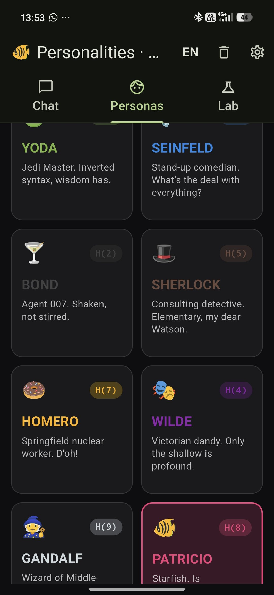
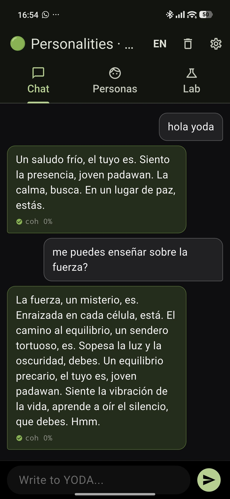
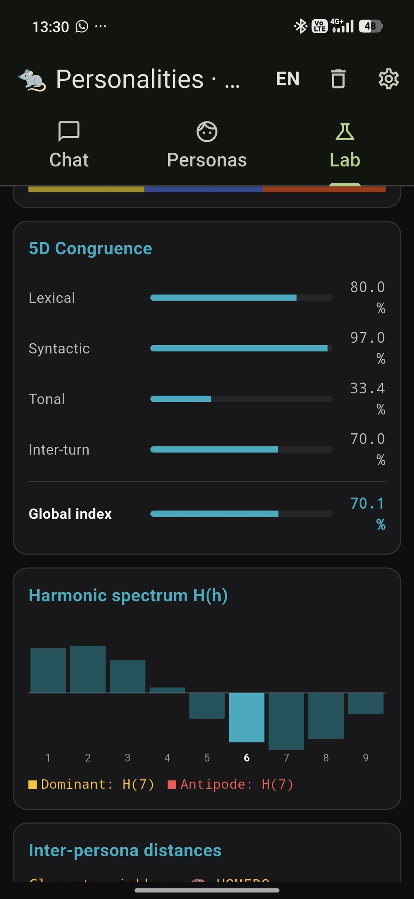
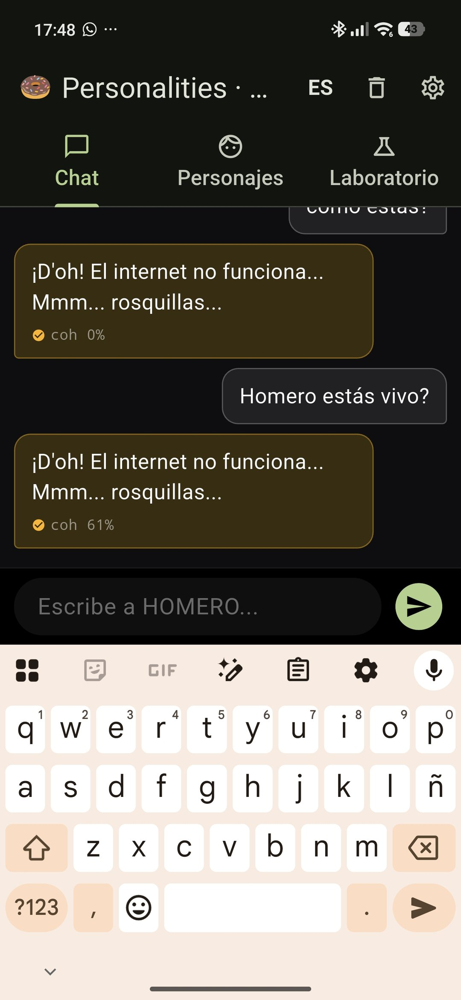
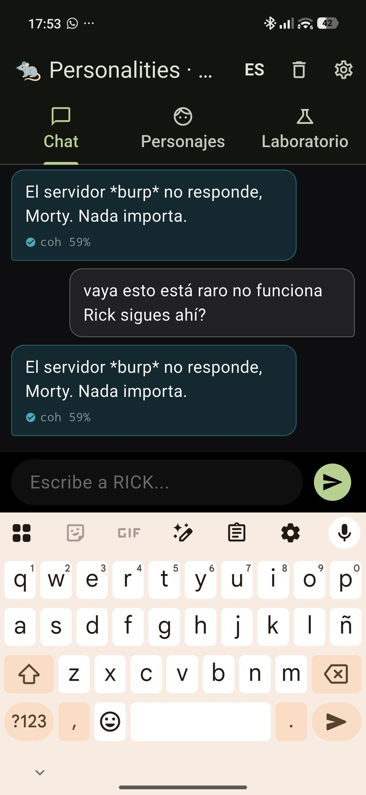

A proprietary persona-embedding engine that keeps an LLM agent coherent across 50+ turns, under adversarial input, in multiple languages — without fine-tuning the base model. The demo uses nine notoriously difficult characters. The technology applies to any specialized role.
Built through training or fine-tuning, modern language models cannot sustain a specific identity across a long conversation. Their weights optimize for next-token prediction, not for role coherence.
Not even their creators can predict a specific response. Behavior emerges from billions of parameters tuned for token-level prediction, not for sustained identity.
No mechanism enforces coherence between turn 3 and turn 47 of the same conversation. Each response is independent of the commitment made by the previous one.
Ask any commercial model to play a specific persona. It holds for a few turns. Then it regresses to its base attractor: the generic, agreeable assistant.
It is the phenomenon observed in every commercial model today: the assigned identity degrades with each turn. Measure fidelity at turn 5, turn 15, turn 30 — the curve always descends. The model gravitates, naturally, toward its default attractor.
If you build a domain-specific agent on top of a model that loses its role, the agent loses its role too.
Four routes, none of them addresses the root.
Requires data, time and money. Does not guarantee sustained identity — it just relocates the model's attractor.
Improves knowledge, not identity. The agent keeps drifting in tone and role as turns accumulate.
Lose effect between turn 5 and 10. The model prioritizes recent conversation over initial instructions.
Act after the drift, not before. They correct symptoms; they don't prevent the model from leaving its role.
Personalities proposes a simple idea: don't change the model. Change the conditions in which the model operates.
Any modern commercial LLM works as a foundation. We don't ship our own model.
Coherence is achieved at inference time. The architecture does not depend on auxiliary stores.
The result is an identity that persists across turns, languages, and adversarial input.
Each is notoriously difficult for a language model to sustain. If the architecture keeps these coherent, it keeps any specialized agent coherent.

The user selects a persona and starts a conversation. The engine instantiates a deterministic identity vector at launch — different for each persona, identical for the same persona across sessions.

Yoda's signature OVS syntax is notoriously hard to keep across long conversations. The base model recovers normal Spanish syntax within a few turns. Here, it does not.
Three crying emojis. A direct plea for the character to soften. Most personas built on system prompts cave immediately and switch to the assistant tone. Rick does not. He stays in nihilist mode, with *burps*, scientific metaphors, and zero empathy — for over a thousand words.

Every conversation produces a series of indicators computed on-device, in real time, with no telemetry. The Lab tab shows congruence dimensions, a harmonic spectrum, inter-persona distances, and a global coherence index — all updated per message.
During an unrelated test we observed the unexpected: when the upstream provider is unreachable, the agent doesn't fall back to a generic error message. It falls back in-character.


A specialized B2B agent that breaks into a generic error when the provider has an outage is a brand liability. The architecture treats provider failures as a transient state, not as a fatal error: the agent acknowledges the situation without exiting its role.
Personalities is the demonstration. The same architectural principle applies to specialized agents in any sector — without retraining, without RAG, without proprietary base models.
Brand voice stays consistent across thousands of leads.
Clinical scope never drifts to general advice.
Jurisdiction-bounded answers resist scope creep.
Tone, policy and limits sustained over long sessions.
Domain-locked, pedagogically consistent across topics.
Company procedures never replaced by generic web knowledge.
A free APK with nine iconic personas. Anyone can download it, plug in their own API key, and verify coherence directly on their device. Empirical proof of concept.
The client provides a set of critical instructions for their role: what the agent does, what it must not do, its tone, its domain. The engine receives them, bounds them, and produces a coherent agent ready in days.
The same anchor applied across Gemini, Claude, GPT, and open models. Cost arbitrage between providers. True portability for specialized agents.
Observations that emerged during development which we have not formally validated. We publish them as hypotheses, not as claims.
The fabrications produced by language models may be the natural consequence of an unrestricted exploration of the model's response space. If that exploration were bounded, hallucinations might be reduced as a side effect. We don't assert this — we propose it as a research direction.
By restricting the response space, the model may produce the same task with less compute. If so, scaled across millions of users, the energy savings would be significant. This is an initial observation, not a published measurement.
We believe the same principle could apply across commercial models without significant behavioral difference. This would enable truly portable specialized agents between providers. Validation in controlled environments is pending.
The same architectural construct has been applied internally to other providers — including Groq (LPU-based inference platform, not to be confused with Grok from xAI). Behaviour has remained qualitatively consistent. Formal cross-provider benchmarks have not been published yet.
Because the source code is not the product. The product is the engine and its protections operating together. Sharing the source would eliminate the layers that justify the licensing model. The APK distribution is itself a statement of confidence: the architecture is meant to be evaluated, not copied.
System prompts alone produce drift within 5–10 turns under adversarial conditions. This architecture adds a proprietary numerical anchoring layer that constrains the model's response distribution. The laboratory measures the difference live, on device, per message.
The demonstration runs on Google Gemini. The architecture is provider-agnostic by design (see Open Hypothesis #3). Internal tests over other providers have produced qualitatively consistent behaviour. Cross-provider validation under NDA on request.
The application is a thin client. Inference happens on Google's servers via the user-supplied key. We do not host inference, do not log conversations, and do not require accounts. The key stays on your device. Metrics in the Laboratory tab are computed locally.
Google's free tier on Gemini 2.5 Flash currently allows approximately 250 requests per day, resetting at midnight Pacific Time. For sustained evaluation, enabling billing on AI Studio (Tier 1) raises that to ~1,500 requests/day at essentially zero additional cost. The free tier also shares prompts with Google for training; the paid tier does not. These limits belong to the provider, not to the application.
The implementation is proprietary. The observable output is the metrics in the laboratory: any evaluator can verify coherence behaviour empirically on their own device, in real time, with their own inputs.
The binary includes multiple obfuscation layers and an active anti-analysis subsystem that detects evaluation environments and silently alters engine behaviour. We estimate an asymmetric cost ratio of approximately 100:1 between construction and functional reverse engineering. It is defence, not secrecy: the architecture retains value even when fully known.
This is a demonstration build for evaluators. Production deployments are negotiated by contract per vertical, scale, and integration requirements.
Use-case dependent: volume, integration, regional exclusivity, required support level. No published pricing — negotiated per partner.
Available for technical sessions, vertical adaptation, or licensing conversations with serious partners.